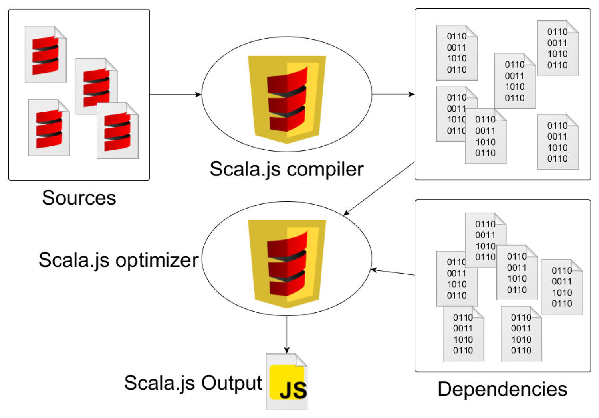
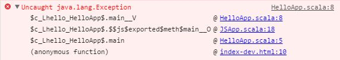
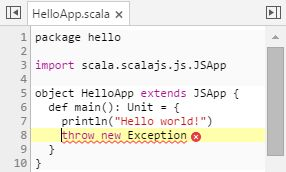
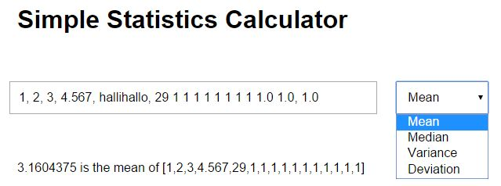

Evaluation of Scala.js
for Interactive Web Surfaces
By Sebastian Dassé
Motivation
- 90% of all websites use JavaScript
-
problem: JavaScript is flawed
- has many inconsinstencies and bad surprises
- many established programming concepts are unspecified (e.g. classes, modules, constants)
- dynamic typing leads to runtime errors and makes refactoring hard
- solution: use a different language and compile to JavaScript
Scala.js
- is a Scala to JavaScript compiler
- developed mainly by Sébastien Doeraene at EPFL, on suggestion of Martin Odersky (inventor of Scala)
- first presented in June 2013
Objective
evaluate the usefulness of Scala.js for developing web surfaces
- How does it work?
- How to configure a Scala.js project?
- How comfortable is it to work with Scala.js?
- Is it possible to implement common requirements of web development?
- What are the effects on code quality?
- How is the performance?
Compilation and Optimization Pipeline

- fastOptJS for development
- fullOptJS for production
Stability
- backwards compatibility guaranteed since version 0.6.0 (Feb 2015)
- test suite with 400 tests (as of Jul 2014)
Scala Support
- full support of Scala standard library
- some differences from Scala semantics (owed to a better performance)
- only partial support of Java standard library
JavaScript Interoperability
Case Studies
based on small prototypical implementations
- automatically updates the browser when code changes are saved
- transfers compiler output to the browser console
Debugging with Source Maps
-
Scala.js supports Source Maps, so it is possible to navigate from the stack trace (error log) to the error source in the source code


Build performance
-
build times
- 10 seconds for the first build
- 2 seconds since second build without clean (thanks to incremental compilation)
- file size
- 20 kB in Scala.js (vs 187 B in pure HTML/JavaScript)
Writing unit tests
-
set of assertions, that can be used in test suites
- tests are quite slow: 19 s for 7 tests with 25 assertions
- can be used in continuous mode:
Currency converter
- simple web UI
- requests the exchange rate from Yahoo! Finance API
Ajax
-
XMLHttpRequest (JS) can be used
-
more convenience with futures
Cross-compiling Library
- implemented statistical functions: mean, median, variance, standard deviation
- one single, shared implementation
- platform-specific facades
- unit tests for shared code and facades
- simple web UI

Code quality in Scala.js
- noticeably less code (fewer helper methods necessary)
- functional programming, but still fast
Runtime performance Benchmark
- benchmark using JSLitmus
- runtime performance of Scala.js very close to pure JavaScript code
Pro
- good IDE support (IntelliJ, Eclipse, ...)
- good JavaScript interoperability
- readable, reusable code is easier to write
- runtime performance almost on the same level as JavaScript
- Scala in the browser
- cross-compiling projects with shared code
- Scala as single language for client and server
- enthusiastic developer community
Contra
- established Scala/Java test libraries (JUnit, ScalaTest) not usable
- tests with uTest are slow
- compiled JavaScript files are still rather big
- many libraries still experimental
Outlook
- planned improvements of Scala.js:
- further performance boost
- a compiler in the browser
- working implementation of the Akka actor model
- success will largely depend on the success of the language Scala